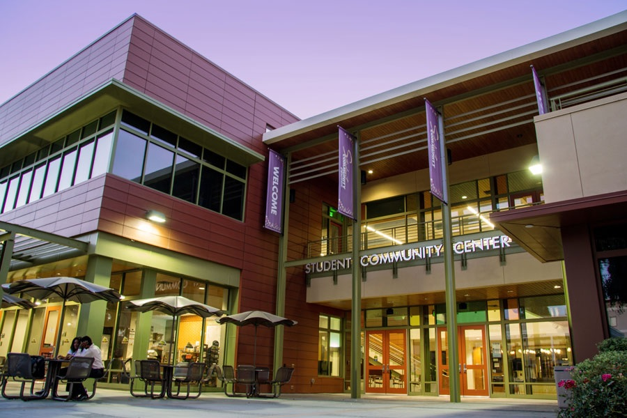
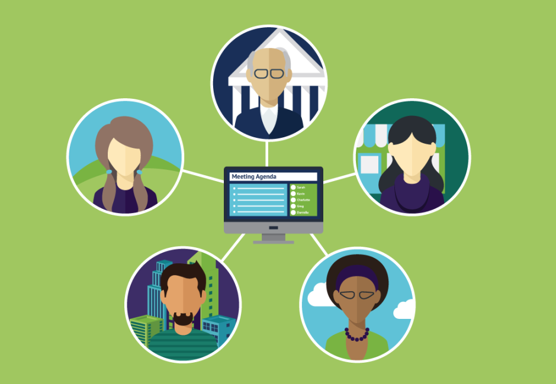

Aggie Neurodiversity Community
Peer Support
As a peer support group, we recognize and validate the unique perspectives of all our members. We embrace neurodiversity, the diversity of brains and minds. We aim to foster healthful relationships among group members, creating a safe and supportive space for all, by encouraging our members to offer peer support to one another in a spirit of fellowship and mutual helpfulness.We aim to be inclusive of all autistic and neurodivergent people, regardless of intersectional identities and political opinions, as long as no members harass other members.
"The real magic of inclusive
autistic spaces...is that almost
every autistic person -everyone
who is able to participate
without violating other people's
boundaries -can expect to be
accepted for who [they are]."
-Jim Sinclair (2010)
In-Person

Our in-person meetings are temporarily suspended due to COVID-19.
However, before the COVID-19 pandemic, we would typically meet on the UC Davis campus (often in the Student Community Center) and gather for discussions with free pizza.
Because it can sometimes be difficult to find an appropriate place to break into a group discussion, we would keep a text chat open so that group members could contribute to discussion either aloud or (if they bring a phone) by text message. The text chat would be projected for all to see.
Virtual
Our virtual meetings use Zoom.
Members are welcome to display their screen or not as they prefer. Similarly, members are welcome to contribute verbally or via the Zoom chat,as they prefer. We strive to make our meetings comfortable for neurodivergent people with different preferences regarding communication modalities.
We use a waiting room to protect meetings from Zoom-bombers.